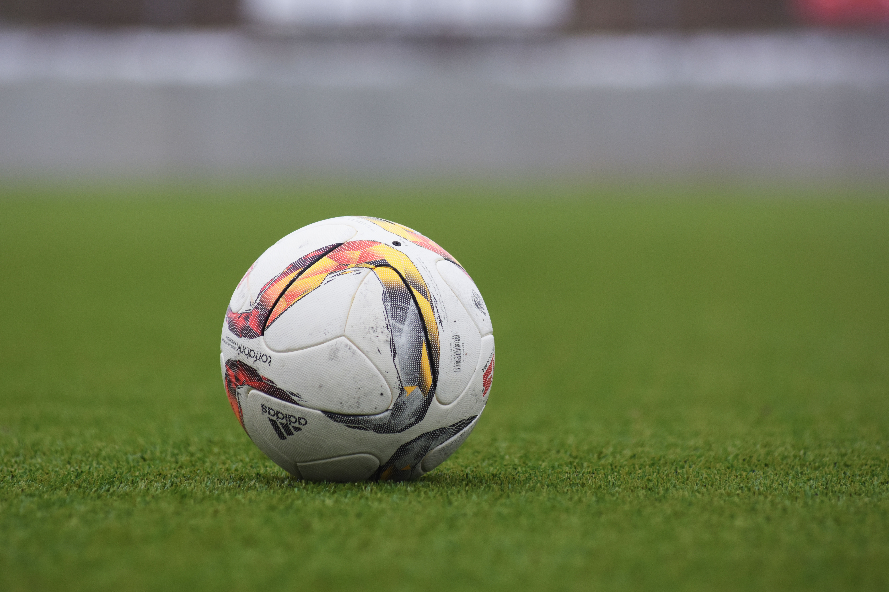

O Campeonato Brasileiro de 2026 reserva um confronto importante entre Palmeiras e Bahia, e a partida coloca frente a frente duas equipes que estão entre as seis primeiras colocadas da competição e possuem objetivos importantes na reta final.
O Palmeiras inicia a rodada na vice-liderança, com 57 pontos, três atrás do Flamengo. O Bahia aparece na sexta colocação, com 46 pontos, depois de ter sido ultrapassado pelo Cruzeiro na abertura da rodada. Para o time paulista, vencer significa manter a pressão sobre o líder. Para os baianos, conquistar pontos fora de casa pode representar um passo importante na luta por uma vaga na próxima Copa Libertadores.
O encontro também marca o retorno das duas equipes ao Campeonato Brasileiro após a pausa para a Data Fifa. Enquanto o Palmeiras precisou administrar a ausência de diversos jogadores convocados para suas seleções, o Bahia aproveitou o período para recuperar atletas e intensificar a preparação comandada por Rogério Ceni.
Palmeiras busca vitória para manter viva a esperança pelo título
O time paulista chega ao confronto com uma campanha de 16 vitórias, nove empates e apenas três derrotas no Brasileirão. A equipe comandada por Abel Ferreira, que não estará à beira do campo nesta quinta-feira por suspensão, construiu sua posição na tabela com regularidade e uma das defesas mais consistentes da competição.
Em 28 rodadas, o Verdão sofreu apenas 21 gols. O rendimento como mandante também é um dos fatores que sustentam a disputa pelo título. Nos 13 jogos realizados em casa pelo Brasileirão, a equipe conquistou nove vitórias, três empates e sofreu uma derrota.
Entretanto, os resultados recentes aumentaram a necessidade de voltar a vencer. Antes da interrupção do campeonato, o Palmeiras empatou sem gols com o Grêmio, em Porto Alegre, no dia 20 de setembro. O resultado manteve a equipe próxima do Flamengo, mas impediu uma aproximação maior na classificação.
O confronto contra o Bahia abre uma sequência importante no calendário alviverde. No domingo, 11 de outubro, terá o clássico quando recebe o Corinthians, às 17h30, pela 30ª rodada. Na quarta-feira seguinte, dia 14, enfrenta o Fluminense, no Maracanã, às 21h30, pela semifinal da Copa Libertadores.
Bahia tenta recuperação
O time baiano chega ao compromisso buscando uma resposta depois da derrota por 2 a 1 para o Athletico-PR, em 20 de setembro, na Arena da Baixada, em Curitiba.
Na ocasião, Erick Pulga marcou o gol tricolor, enquanto Esquivel e Rivaldo balançaram as redes para os paranaenses. O Bahia ainda teve a oportunidade de empatar nos acréscimos, mas Everaldo desperdiçou uma cobrança de pênalti.
A derrota encerrou uma sequência de 11 partidas sem perder da equipe comandada por Rogério Ceni.
Apesar do resultado negativo, o Bahia mantém uma campanha competitiva. Com 46 pontos em 28 partidas, o clube soma 12 vitórias, dez empates e seis derrotas. Seu desempenho fora de casa merece atenção: o Tricolor possui a terceira melhor campanha como visitante do Brasileirão, com 52% de aproveitamento.
A pausa no calendário permitiu que Rogério Ceni trabalhasse ajustes táticos e recuperasse opções para o elenco. O último treinamento antes da viagem para São Paulo aconteceu na quarta-feira (7), no CT Evaristo de Macedo, com atividades técnicas, trabalho tático e exercícios de finalização.
Palmeiras terá retornos importantes, desfalques e dúvidas
Uma das principais notícias é a ausência de Abel Ferreira na área técnica. O treinador cumpre suspensão aplicada pelo STJD, e o auxiliar João Martins será responsável por comandar a equipe durante a partida.
Em compensação, o zagueiro Murilo retorna depois de cumprir suspensão pelo terceiro cartão amarelo.
A comissão técnica também precisou avaliar a condição física dos jogadores que participaram dos compromissos internacionais durante a Data Fifa.
Gustavo Gómez, Flaco López, Jhon Arias, Giay, Piquerez, Emiliano Martínez, Mauricio e Ramón Sosa estiveram envolvidos em compromissos de suas seleções. O desgaste e a logística de retorno podem influenciar a formação titular.
O atacante Paulinho, por sua vez, segue em recuperação física e não estará disponível.
No setor ofensivo, Flaco López é uma das principais referências da temporada. O argentino soma 21 gols pelo Palmeiras em 2026, considerando todas as competições.
Bahia ganha reforços para a partida
Do lado baiano, Rogério Ceni chega ao confronto com mais alternativas para montar a equipe.
O atacante Kike Olivera volta a ficar disponível após cumprir suspensão na última rodada. Michel Araújo também retomou os treinamentos depois de um período de recuperação física.
Os jovens Kauê Furquim e Ruan Pablo, que estavam com as seleções brasileiras de base, retornaram ao clube e ampliaram as opções para o setor ofensivo.
O principal desfalque é o goleiro Léo Vieira, que segue em recuperação de cirurgia.
A maior dúvida na formação titular aparece na lateral direita, onde Marcos Victor e Román Gómez disputam posição.
Prováveis escalações
Palmeiras: Carlos Miguel; Giay (Khellven), Gustavo Gómez, Murilo e Arthur (Piquerez); Marlon Freitas, Lucas Evangelista, Andreas Pereira e Felipe Anderson (Jhon Arias); Flaco López e Vitor Roque.
Bahia: Ronaldo; Marcos Victor (Román Gómez), David Duarte, Kanu e Luciano Juba; Nicolás Acevedo, Erick e Rodrigo Nestor; Kike Olivera, Erick Pulga e Alejo Véliz.
As formações são prováveis e dependem da confirmação oficial dos titulares antes do início da partida.
Arbitragem será de Bráulio da Silva Machado(SC).
A partida terá transmissão ao vivo pela TV Globo, pela ge tv e pelo Premiere.
Retrospecto favorece o Verdão
O histórico geral do confronto aponta vantagem palmeirense.
Os clubes já se enfrentaram 66 vezes, considerando jogos oficiais e amistosos.
- 34 vitórias do Palmeiras
- 20 empates
- 12 vitórias do Bahia
- 99 gols marcados pelo Palmeiras
- 49 gols marcados pelo Bahia
O encontro mais recente aconteceu em 5 de abril de 2026, na Arena Fonte Nova, em Salvador, pelo primeiro turno do Campeonato Brasileiro.
Na ocasião, o Palmeiras venceu por 2 a 1, com gols de Jhon Arias e Santiago Mingo, contra.
O resultado desta quinta-feira também pode representar uma mudança no retrospecto recente. Em 2025, o Bahia venceu o Palmeiras por 1 a 0 em São Paulo, no dia 27 de abril, e conseguiu derrotar o adversário nos dois turnos daquela edição do campeonato.
Agora, o Verdão tenta repetir o desempenho de 2024, quando venceu os dois confrontos contra o Tricolor na Série A.
O que está em jogo na 29ª rodada
A importância da partida vai além dos três pontos.
O Palmeiras disputa diretamente a liderança com o Flamengo, que também entra em campo nesta quinta-feira, contra o Santos, na Vila Belmiro, às 19h30.
Uma vitória sobre o Bahia levaria o Palmeiras aos 60 pontos, mesma pontuação que o Flamengo possui antes de enfrentar o Santos. A possibilidade de assumir a liderança dependerá também do resultado do clube carioca e dos critérios de desempate.
Para o Bahia, a situação envolve a disputa pelas primeiras posições e a tentativa de recuperar terreno após a derrota em Curitiba.
O Fluminense, que inicia a quinta-feira com 48 pontos, enfrenta o Coritiba no Maracanã. Dessa maneira, uma vitória do Tricolor baiano em São Paulo pode recolocá-lo em uma posição favorável na briga pelo G-4, dependendo dos demais resultados.
Há também um desafio dentro de campo: o Palmeiras possui uma defesa sólida e forte aproveitamento como mandante, enquanto o Bahia apresenta números expressivos como visitante.
O confronto entre essas características pode ser decisivo para o desenvolvimento da partida.
Reta final do Brasileirão aumenta o peso do confronto
Palmeiras e Bahia chegam à 29ª rodada com campanhas que justificam a expectativa por um confronto equilibrado, mesmo diante da vantagem palmeirense na classificação.
O Verdão busca transformar a força em casa em uma sequência de vitórias capaz de pressionar o Flamengo até as rodadas decisivas. A equipe também precisa administrar um calendário exigente, dividido entre Campeonato Brasileiro, Libertadores e Copa do Brasil.
O Bahia, por sua vez, tenta demonstrar que a derrota para o Athletico-PR foi um resultado isolado em meio a uma campanha consistente. Com praticamente todo o elenco à disposição, Rogério Ceni tem a oportunidade de enfrentar um dos candidatos ao título com alternativas para modificar o time durante o jogo.
Para o Palmeiras, a vitória pode significar uma aproximação decisiva na corrida pela liderança. Para o Bahia, conquistar um resultado positivo em São Paulo representa a oportunidade de fortalecer sua candidatura às primeiras posições do Brasileirão 2026.